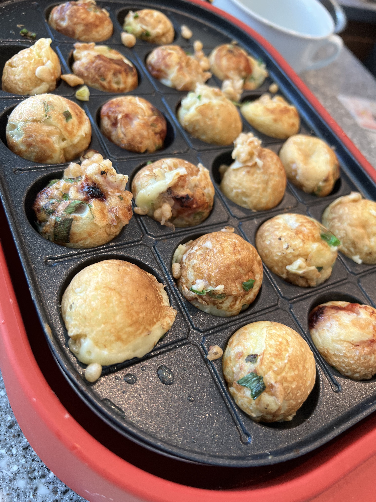

Daiki's Recipe #1
Takoyaki (Japanese Octopus Balls)
2 servings

Ingredients
- 500g of Takoyaki Flour
- 2 Eggs
- 500ml of Water
- 100g of Green Onions
- 50g of Pickled Ginger
- 75g of Octupus
- 20ml of Olive Oil
- Mayonnaise
- Japanese Takoyaki Sauce
Instructions
- In a large bowl, mix Takoyaki flour, two eggs, and water.
- Chop green oninons, pickled ginger, and octopus in small pieces.
- Turn on Takoyaki maker, put olive oil in each ball, and wait until it's hot.
- Put the flour mixture into the balls.
- Add chopped ingredients into the batter that is being cooked in the balls.
- When the batter gets brown, use a toothpick to flip it over.
- When fully cooked, put Takoyaki onto a plate and serve with mayonnaise and Japanese Takoyaki sause.